Artikelen over Excel, R en Statistiek.
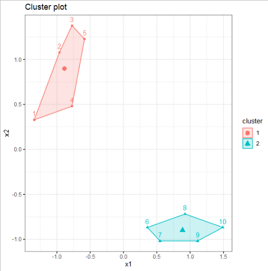
Uitleg van het K-Means algoritme voor Machine Learning aan de hand van een klein voorbeeld in Excel.
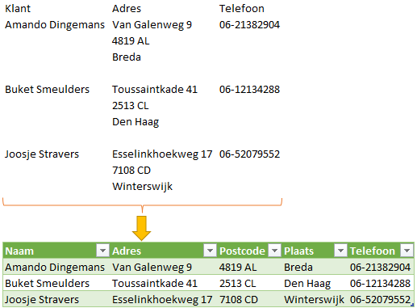
Vervolg op het transformeren van gestapelde data in één kolom naar tabelvorm.
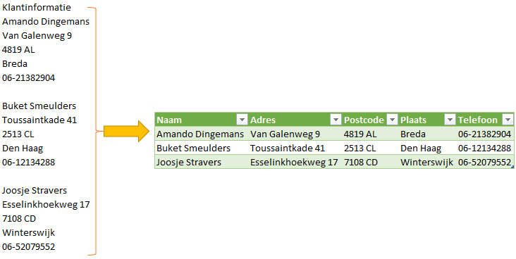
Gestapelde data in één kolom transformeren naar tabelvorm.
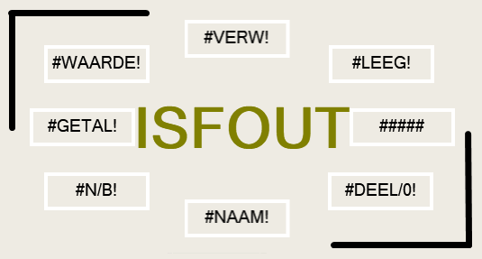
Met IS functies de waarde in een cel controleren.
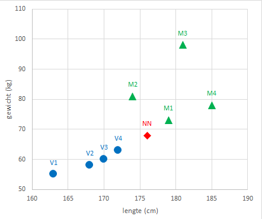
Uitleg van de Machine Learning methode KNN aan de hand van een paar kleine voorbeelden in Excel.
Een matrix met (opeenvolgende) getallen genereren met de functie REEKS.
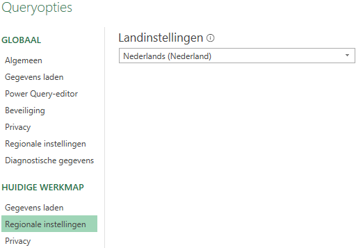
Het gebruik van landinstellingen bij het importeren van platte bestanden (.csv).
Excel functies voor het werken met complexe getallen.
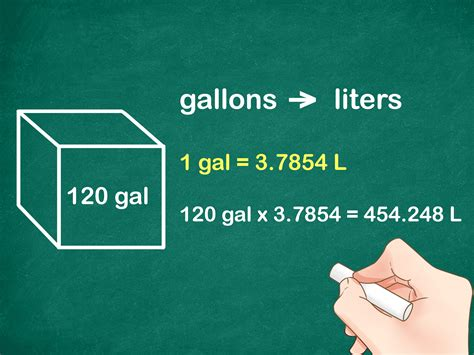
Met de Excel formule CONVERTEREN kun je eenvoudig Engelstalige eenheden omrekenen naar andere eenheden.
Formules om het kwartaalnummer uit een datum te halen.
Het werken met matrices (arrays) in Excel.
Uitleg over de workflow voor de productie van mijn studieboeken.
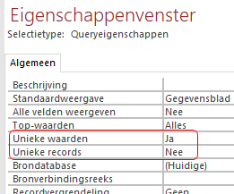
Uitleg over het verschil tussen deze twee query opties in MS Access.
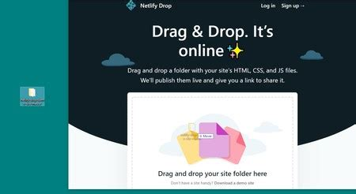
Hoe je snel een website online kunt brengen.
Hoe een werkomgeving voor Latex eruit kan zien.
Over hoe willekeurige getallen kunt genereren in Excel.
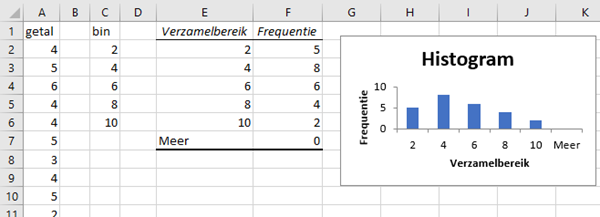
Hoe je frequentieverdelingen en histogrammen in Excel maakt.
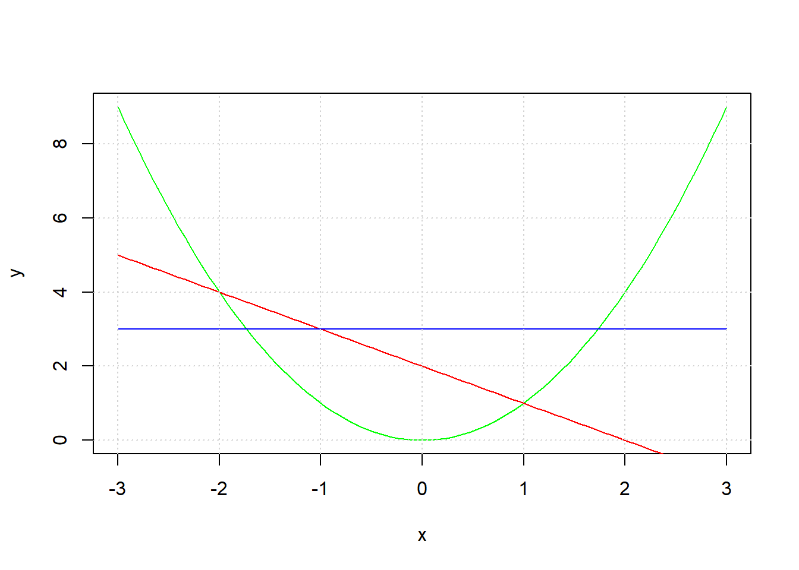
Hoe je snel en eenvoudig grafieken kunt maken met de functie curve.
Gegevens in een Excel tabel exporteren naar een XML bestand.
De mogelijkheden om latex code op te nemen in platte Markdown.
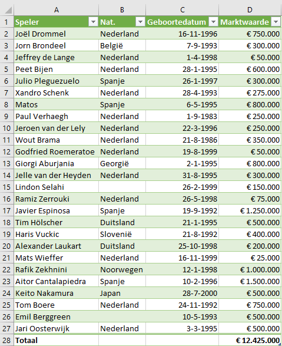
Het bepalen van de marktwaarde van voetbalspelers met behulp van een webquery.
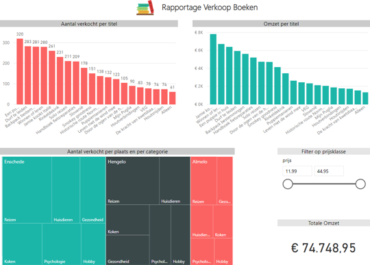
Het tweede deel van de tutorial over Power BI Desktop. Meer visualisaties en eindrapportage.
Het eerste deel van een tutorial over het werken met Power BI Desktop. Het ophalen van gegevens en het maken van een visualisatie.
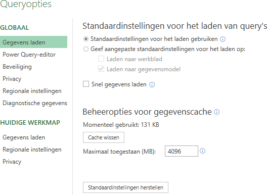
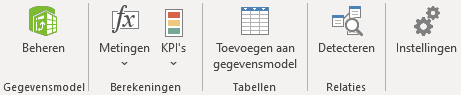
Beschikbaarheid van Power Pivot nu voor alle versies van Excel.
Statistische mogelijkheden in Excel en de beperkingen hierbij.